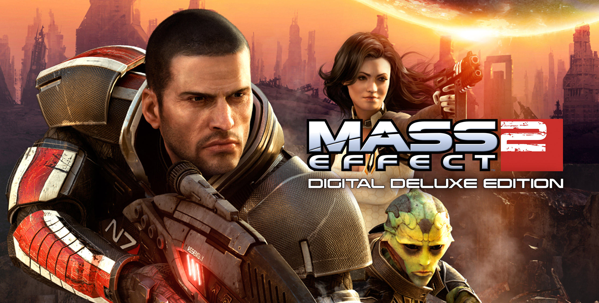
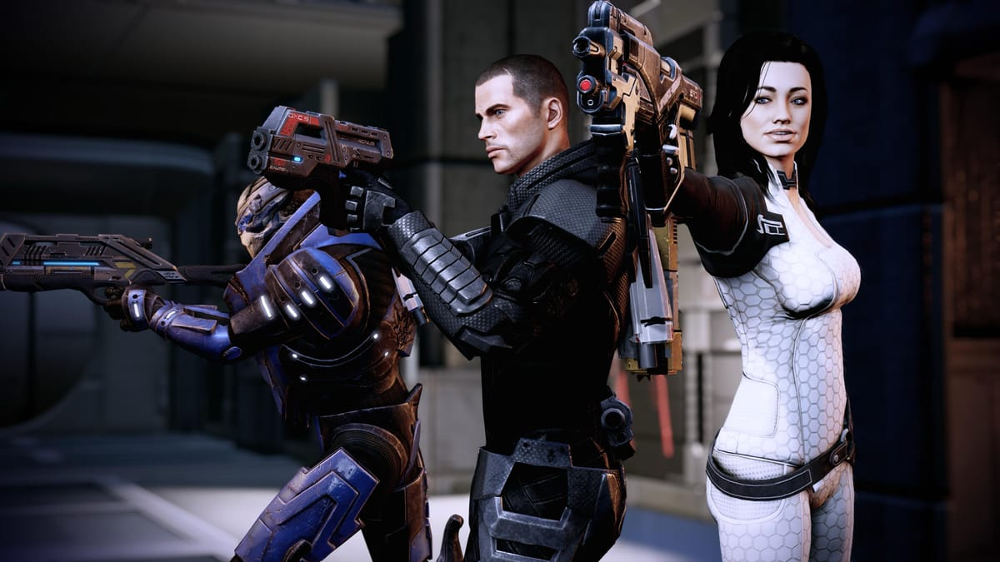

Mass Effect 2 is a 2010 action role-playing game developed by Bioware and published by Microsoft Game Studios and Electronic Arts. It was released for Windows and the Xbox 360 in January 2010, as well as the PlayStation 3 the following year. It is the second installment in the Mass Effect series and a sequel to the original Mass Effect. The game takes place within the Milky Way galaxy during the 22nd century, where humanity is threatened by and insectoid alien race known as the Collectors. The player assumes the role of Commander Shepard, an elite human soldier who must assemble and gain the loyalty of a diverse team to stop the Collectors in a suicide mission. Using a completed saved game of its predecessor, the player can impact the game’s story in numerous ways.
For the game, Bioware changed several gameplay elements and further emphasized third-person shooter aspects, including limited ammunition and regenerable health.
In contrast to the exclusive focus on the main story of the original Mass Effect, the developers opted to create a plot where optional missions had as much intensity as the main mission.
Mass Effect composer Jack Wall returned to compose Mass Effect 2’s music, aiming for a darker and more mature sound to match the game’s mood. Mass Effect 2 also supports a variety of downloadable-content packs, ranging from single in-game character outfits to entirely new plot-related missions. Notable packs include Kasumi – Stolen Memory, Overlord, Lair of the Shadow Broker, and Arrival.
Released to critical acclaim, Mass Effect 2 was praised for its presentation and cinematography, diverse and complex characters, and improved combat over its predecessor. Some critics however, expressed concerns about the game’s simplified role-playing mechanics. The game received numerous year-end awards, including Game of the Year at the 14th Annual Interactive Achievements Awards, and Best Game at the 7th British Academy Game Awards. Mass Effect 2 is considered a significant improvement over its predecessor and one of the best video games of all time. A sequel, Mass Effect 3, was released in 2012, in 2021, Mass Effect 2 was remastered as part of the Mass Effect Legendary Edition.
Mass Effect 2 is a single-player action role-playing game in which the player takes the role of Commander Shepard from a third-person perspective. Before the game begins, the player determines Shepard’s gender, appearance, military background, combat-training and first name. The player may choose to import a character from a completed saved game of the original Mass Effect or start the game with a new character. Importing an old character allows several decisions the player made in the original game to impact the story of Mass Effect 2 and grants the player a set of starting bonuses. The games overworld and classes are the same as in the first game but merely updated.

In 2183, shortly after the main events of Mass Effect 1, Shepard and their companions are on board their ship the SSV Normandy while patrolling for geth resistance, but are attacked by an unknown vessel, forcing the crew to abandon ship. Shepard made sure that Joker the ships pilot made it to the final escape pod before being blasted into space and dying via asphyxiation after a suit breach. Shepards body is pulled into the orbit of a nearby planet and recovered by Cerberus (a faction you meet in the first game that are human-supremacists), they begin a project called the “Lazarus Project” with its sole purpose to bring Shepard back to life.
Two years pass and Shepard is revived and the research station is being attacked by its security mechs. Shepard escapes alongside Jacob Taylor and Miranda Lawson. Shepard is brought to meet the Illusive Man, who reveals that entire populations of human colonies have disappeared over the galaxy. Shepard reluctantly works with Cerberus and gathers new and old companion. Along the way Shepard discovers that the humans that had disappeared were been taken by the collectors and used to make human-reaper hybrids.
© 2026 HGH